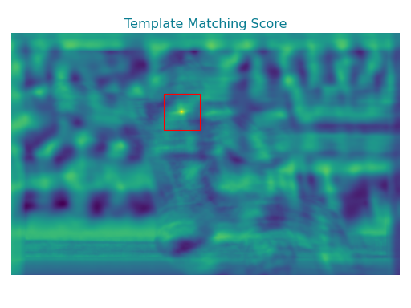
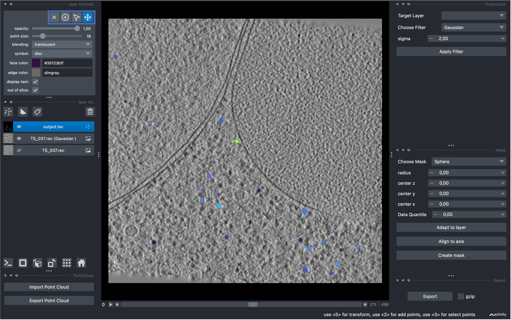

Postprocessing#
TL;DR#
The postprocess.py command-line tool can be used to analyze the results generated by match_template.py.
postprocess.py --help
Executing the following code will generate a tab-separated file named output.tsv with eight columns. The z, y and x column correspond to the translation, the euler_z, euler_y and euler_x column to the rotation used to obtain the column score. The detail column provides some additional information based on the process with which the peaks were generated.
At most 1,000 peaks top scoring that are separated by at least 20 voxel and no less than 30 voxel distanced from the boundaries of the target will be written to disk when executing the following from within the shell:
postprocess.py \
--input_file output.pickle \
--output_prefix output \
--output_format orientations \
--min_distance 30 \
--min_boundary_distance 20\
--number_of_peaks 1000
Note
tme uses the zyx convention, like the CCP4/MRC format. In IMOD terms, a file read by tme.density.Density.from_file() with data shape 500, 928, 960, will contain 960 columns, 928 rows and 500 sections. Similarly, the reported Euler angles are in intrinsic zyx convention (see tme.matching_utils.euler_to_rotationmatrix() for reference).
Executing the following code will align the template to the target used in match_template.py based on high-scoring orientations. These high-scoring orientations are written to disk, either as atomic structure or density depending on which was used as input for match_template.py. The generated files follow the naming pattern {output_prefix}_{index}.{extension}. In the following example output_prefix would be output. Index 0 corresponds to the orientation with highest score, index 1 to the second largest and so on. Extension corresponds to the file extension of the template used in match_template.py.
The following will write at most ten top scoring alignments to disk.
postprocess.py \
--input_file output.pickle \
--output_prefix output \
--output_format alignment \
--number_of_peaks 10
Executing the following code will extract regions from the target with the dimension of the template used in match_template.py. The output can be used for averaging, i.e. subtomograms, or alignment. The generated files follow the naming pattern {output_prefix}_{index}.mrc. In the following example output_prefix would be output. Index 0 corresponds to the orientation with highest score, index 1 to the second largest and so on.
The following will write at most 500 top scoring peaks separated by a distance of 20 voxel that have been identified using tme.analyzer.PeakCallerMaximumFilter to disk.
postprocess.py \
--input_file output.pickle \
--output_prefix output \
--output_format extraction \
--min_distance 20 \
--number_of_peaks 500 \
--peak_caller PeakCallerMaximumFilter
This option will generate a STAR file and extract subtomograms which can be directly used input for reconstruction, refinement and downstream classification with RELION. In terms of peak calling and subtomogram extraction, this option performs identical to the output_format extraction. The output STAR file consists of an optics group block which contains informations about the imaging conditions, pixel size, and another data group with tab separated columns containing x, y, z coordinates (in voxels), a file path to the generated cropped subtomogram file, the Euler angles, namely rotation, tilt and psi.
The output is compatible with RELION 4.0 and was tested with relion_reconstruct, and relion_refine_mpi.
postprocess.py \
--input_file output.pickle \
--output_prefix output \
--output_format relion \
--min_distance 20 \
--number_of_peaks 1000 \
-—wedge_mask mask.mrc
Note
Without a wedge mask or a fully fledged CTF, the averages computed by RELION might be overly distorted due to preferential alignment of subtomograms on the missing wedge. Wedge mask can be generated with tme (see tme.preprocessor.Preprocessor.wedge_mask() and tme.preprocessor.Preprocessor.continuous_wedge_mask()) or the Napari GUI (see preprocessing section).
postprocess.py automatically pads the extracted subtomograms to an even number of voxels in each dimension to avoid potential RELION crashes.
You can find an overview of available peak calling methods here.
Aim#
The aim of postprocessing is to determine regions of high similarity between template and target from the template matching output. This procedure is referred to hereafter as peak calling. Each peak corresponds to a unique occurence of the template in the target, which here is fully characterized by a translation vector, three Euler angles, a score and an additional data column.
Background#
Generally, high scores indicate regions of high similarity, and most scoring functions are limited to the interval [0, 1], with 1 being a perfect match (see exhaustive template matching for details on your specific scoring method).
match_template.py performs an search of all rotational and translation degrees of freedom of the input. For a three-dimensional input this corresponds to a six-dimensional search. Due to memory contraints, this problem is simplified by only storing the maximum score for each translation of the template as well as the rotation used to obtain it. This results in two arrays with the same shape as the target.
To better understand this, lets recall an example from the Preprocessing section:
(Source code, png, hires.png, pdf)
{kind=link}
{kind=link}

The score peak is located within the red rectangle at 111, 240. Therefore, the maximum similariy is obtained when translating the template so that its center of mass is at position 111, 240. This convention used in tme to represent in scores and candidates is analogous to other tools and figuratively explained in a skimage tutorial
The identity matrix is the corresponding rotation matrix for this peak. Different approaches are used to express rotations and translations. tme centeres rotations around the center of mass and applies translations subsequently by default.
The following sections explain the output of match_template.py and outline the peak calling procedure used by postprocess.py.
Template Matching Output#
The output of match_template.py is a pickle file that contains the output of the analyzer used on the scores, which by default is tme.analyzer.MaxScoreOverRotations. The pickle file can be read using tme.matching_utils.load_pickle() and contains five objects:
Scores Array: A numpy array with scores mapped to translations.
Translation Offset: A translation offset informing about shifts in coordinate sytems.
Rotations Array: A numpy array detailing rotations connected to the scores from specific translations.
Rotation-Euler Dictionary: A mapping of rotations to their corresponding Euler angles.
Metadata: Coordinate system information relevant to subsequent analysis as well as all parameters that were used to enable reproducibility.
For those familiar with other tools, the output aligns with what’s seen in STOPGAP, PyTom and Situs colores.
However, when you use the -p flag with match_template.py, the output structure differs. The flag triggers direct peak calling, altering the output to include:
Translations: A numpy array containing translations with shape number_peaks x dimensions.
Rotations: A numpy array containing rotations with shape number_peaks x dimensions x dimensions.
Scores: The scoring values for each peak, defined by its translation and rotation.
Details: Additional information regarding each peak.
Metadata: Coordinate system information relevant to subsequent analysis as well as all parameters that were used to enable reproducibility.
Peak Calling#
Regardless of the output_format, postprocess.py will determine orientations where the template is most similar to the target. In the following we will have a look on what postprocess.py is doing under the hood.
Schematically, we will use the pickle file generated by match_template.py, together with tme.analyzer.PeakCallerScipy (see Template matching score analysis for further options) to identify a maximum of 1000 local maxima that are separated by a distance of 5 voxel. Typically it is reasonable to set min_distance and min_boundary_distance to the size of the smallest dimension of the template.
import pickle
import numpy as np
from tme.analyzer import PeakCallerScipy
from tme.matching_utils import load_pickle
# Loading ``match_template.py`` output.
data = load_pickle("output.pickle")
scores, offset, rotations, rotation_mapping, *_ = data
# Calling peaks on score array
peak_caller = PeakCallerScipy(
number_of_peaks = 1000,
min_distance = 5
)
peak_caller(scores, rotation_matrix = np.eye(3))
candidates = tuple(peak_caller)
# Writing orientations to disk
header = "\t".join(["z", "y", "x", "euler_z", "euler_y", "euler_x", "score", "detail"])
with open("output.tsv", mode = "w", encoding = "utf-8") as ofile:
_ = ofile.write(f"{header}\n")
for translation, _, score, detail in zip(*candidates):
angles = rotation_mapping[rotations[tuple(translation)]]
translation_string = "\t".join([str(x) for x in translation])
angle_string = "\t".join([str(x) for x in angles])
_ = ofile.write(f"{translation_string}\t{angle_string}\t{score}\n")
Note
The determined candidates heavily depend on the used analyzer. For more details on available analzyers please refer to Template matching score analysis.
In summary, peak calling determines a local maximum in the computed scores array, looks up the corresponding rotation in the rotations array, converts the rotation index to Euler angles using rotation_mapping. The generated output.tsv file is equivalent to running postprocess.py with output_format orientations.
Usage Examples#
The following outlines how to use the output of postprocessing.py’s output_format orientations for the previous section’s Usage Examples. We assume the generated orientations file is named output.tsv.
The most commonly used approach towards assessing picked particles is through manual filtering. This procedure is supported by the napari GUI shipped wiith tme. Like in previous tutorials, using the GUI requires following the installation procedure outlined in the Optional GUI Setup. For an introduction how to operate the GUI see the preprocessing section.
To showcase the GUI, we are going to utilze particle picks generated on the tomogram TS_037 [1]. Launch the GUI application, drag and drop the tomogram into the viewer and subseqeuently used the Import Point Cloud button to select and import the output.tsv generated with postprocess.py in output_format orientations. The colors of the particles correspond to their respective score relativ to other elements of the same point cloud. The particles are colored according to the Turbo colorscale, with low scoring particles being colored in blue, and high scoring particles colored in red.
{kind=link}

Using the controls outlined in blue, we can remove particles from the set by using the delete key. If you would like to change the color, size, or shape of the particles, you can select everything by clicking on the particle layer followed by Shift + A. Pressing Shift + A again clears the selection.
Once you have removed particles that were deemed unreliable by manual inspection, you can export the remaining points using the Export Point Cloud button. This will generate an orientations tsv file anaologous to output_format orientations in postprocess.py. You can even use this subsetted list for further analysis. Assuming the file generated by napari is called filtered_orientations.tsv you can utilize the orientations parameter of postprocess.py like so:
postprocess.py \
--input_file output.pickle \
--output_prefix output \
--output_format extraction \
--orientations filtered_orientations.tsv
Executing the code above will extract all subtomograms from the filtered orientations file.
Note, the code example below is equivalent to using postprocess.py with output_format alignment and serves an illustrative purpose.
For this case, its common to inspect the positioning of the initial structure after translation and rotation in the electron density. The following transforms the initial structure and writes the top ten highest scoring orientations to disk.
import pickle
import numpy as np
from tme import Density, Structure
from tme.matching_utils import euler_to_rotationmatrix, load_pickle
# Load and extract orientations
orientations = []
with open("output.tsv", mode = "r", encoding = "utf-8") as infile:
data = infile.read().split("\n")
# Remove header
_ = data.pop(0)
# Get coordinate system information
target_origin, _, sampling_rate, meta = load_pickle("output.pickle").pop()
# Convert string to floating point
for orientation in data:
orientation = orientation.split("\t")
if len(orientation) == 1:
continue
orientations.append([float(x) for x in orientation])
# Load template and compute center of mass
initial_structure = Structure.from_file("5UZ4.pdb")
center_of_mass = initial_structure.center_of_mass()[::-1]
# Generate candidates and write to disk
n_candidates = min(10, len(orientations))
for i in range(n_candidates):
orientation = orientations[i]
translation, rotation = orientation[0:3], orientation[3:6]
translation = np.subtract(
np.multiply(translation, sampling_rate),
center_of_mass,
)
translation = np.add(translation, target_origin)
rotation_matrix = euler_to_rotationmatrix(rotation)
transformed_structure = initial_structure.rigid_transform(
translation = translation[::-1],
rotation_matrix = rotation_matrix[::-1, ::-1]
)
transformed_structure.to_file(f"{i}.pdb")
Note
Thoe operation outlined above is equivalent to using postprocess.py with output_format alignment.
Note, the code example below is equivalent to using postprocess.py with output_format alignment and serves an illustrative purpose.
The following transforms the initial density and writes the top ten highest scoring orientations to disk.
import pickle
import numpy as np
from tme import Density
from tme.matching_utils import euler_to_rotationmatrix, load_pickle
# Load and extract orientations
orientations = []
with open("output.tsv", mode = "r", encoding = "utf-8") as infile:
data = infile.read().split("\n")
# Remove header
_ = data.pop(0)
# Get coordinate system information
target_origin, _, sampling_rate, meta = load_pickle("output.pickle").pop()
# Convert string to floating point
for orientation in data:
orientation = orientation.split("\t")
if len(orientation) == 1:
continue
orientations.append([float(x) for x in orientation])
# Load template and compute center of mass
initial_density = Density.from_file("emd_8621_transformed.mrc")
initial_density, _ = initial_density.centered(0)
center_of_mass = initial_density.center_of_mass(initial_density.data)
n_candidates = min(10, len(orientations))
for i in range(n_candidates):
orientation = orientations[i]
translation, rotation = orientation[0:3], orientation[3:6]
translation = np.subtract(translation, center_of_mass)
rotation_matrix = euler_to_rotationmatrix(rotation)
transformed_density = initial_density.rigid_transform(
rotation_matrix = rotation_matrix
)
new_origin = np.add(target_origin / sampling_rate, translation)
transformed_density.origin = np.multiply(new_origin, sampling_rate)
transformed_density.to_file(f"{i}.mrc")
Troubleshooting#
The most insightful piece of information for troubleshooting are the computed scores, and their corresponding orientations. Assuming match_template.py generated a file output.pickle, you can write the template matching scores and their corresponding rotations to disk within python as follows:
from tme import Density
from tme.matching_utils import load_pickle
# Loading ``match_template.py`` output.
data = load_pickle("output.pickle")
scores, offset, rotations, rotation_mapping, *_ = data
Density(scores).to_file("scores.mrc")
Density(rotations).to_file("rotations.mrc")
Executing the code above will generated two CCP4/MRC files scores.mrc and rotations.mrc, that you can open in the napari GUI shipped with tme or a macromolecular viewer of your choice. For reference, you can have a look at the preprocessing section to assess whether your results are reminiscent of examples there.
If no examples match your particular case, please feel free to open an issue in the tme repository.